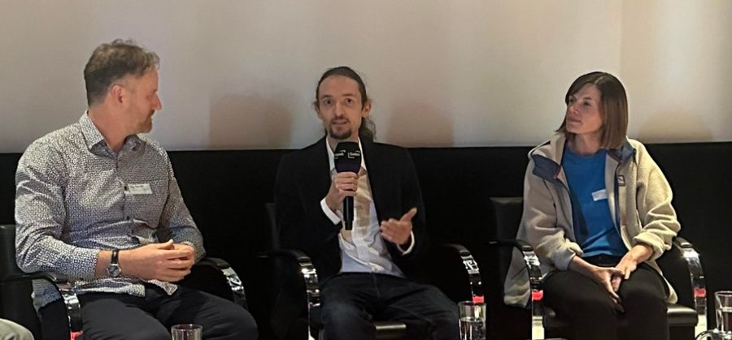
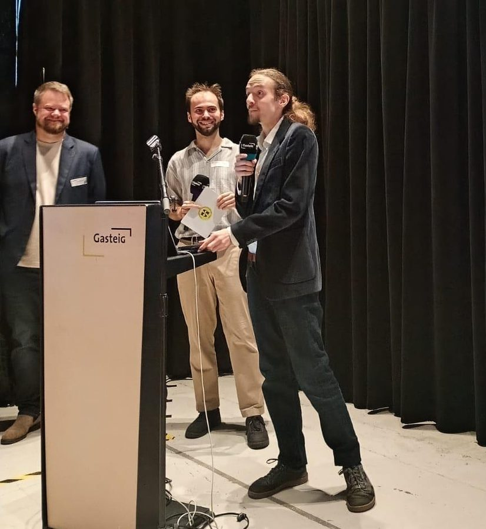

Läuft jetzt
 Video folgt
Video folgt
Video folgt
Virtual Arnold
Arnold Schönberg Center
Die Schönberg-Installation von ComposerMeet wurde in der Langen Nacht der Museen eröffnet und ist weiterhin im Haus zu erleben.
Das Publikum stellt eine Frage, und eine historische Persönlichkeit antwortet als Video-Avatar, mit Stimme und Untertiteln. Komponist*innen ebenso wie Maler*innen, Schriftsteller*innen, Philosoph*innen oder Politiker*innen, auf Grundlage ihrer Briefe, Tagebücher und weiterer Quellen.
KI-generierter Avatar von Fanny Hensel, nach dem Gemälde von Moritz Daniel Oppenheim (1842).
Video folgt
Arnold Schönberg Center
Die Schönberg-Installation von ComposerMeet wurde in der Langen Nacht der Museen eröffnet und ist weiterhin im Haus zu erleben.
Deutsches Museum Verkehrszentrum
Mit ComposerMeet beim Xplorer Day in München.
Derzeit keine öffentlichen Termine. Anfragen gern per E-Mail.
Video folgtArnold Schönberg Center
Präsentation von ComposerMeet und Start der Schönberg-Installation „Virtual Arnold“. Die Eröffnung war ein überragender Publikumserfolg.


17. International Music Business Research Days
Célest Lang als Speaker und beim Roundtable zum Thema „Music and Entrepreneurship“.
Foto folgtCross-Innovation-Reise
Mit ComposerMeet Teil der Cross-Innovation-Reise zur Ars Electronica.

Venture Team Kultur
Honorable Mention für ein quellenfundiertes, KI-basiertes Vermittlungsformat.
Foto: Venture Team Kultur (Yolanda Castillo-Kuchenbecker)

Hochschule für Musik und Theater München
Die erste Live-Umsetzung von ComposerMeet: ein Konzert, in dem das Publikum mit Fanny Hensel ins Gespräch kam.
Foto: Jakob Schad
Publikumsdialog mit Fanny Hensel (KI-Avatar), HMTM München 2026
Jemand im Publikum stellt eine Frage. Auf der Leinwand antwortet eine historische Persönlichkeit in Echtzeit, mit Stimme und Untertiteln.
Grundlage sind ausgewählte Quellen: Briefe, Tagebücher, wissenschaftliche Analysen und zeitgenössische Berichte. Ein KI-System formuliert daraus eine Antwort im Stil der Zeit und nennt die Quellen. Bis die Antwort kommt, vergehen ein paar Sekunden. In dieser Zeit sieht das Publikum, wie das System arbeitet.
Das Publikum hört nicht nur zu, es fragt selbst. Aus einer Werkeinführung wird so ein Gespräch, das neugierig macht und trotzdem auf Fakten beruht.
Jede Antwort beruht auf dokumentierten Quellen und nennt sie. So lässt sich nachprüfen, woher eine Aussage stammt.
Das Publikum stellt Fragen, und der Avatar geht darauf ein. Er antwortet auf Augenhöhe und doziert nicht.
Werk und Leben werden in ihrer Zeit verortet, mit ihren sozialen und historischen Bedingungen. Wo eine Antwort über die Quellen hinausgeht, wird das gekennzeichnet.
Von der gesprochenen Frage bis zur Antwort des Avatars. Das Publikum sieht diesen Ablauf live auf dem Bildschirm. Das macht das System nachvollziehbar und überbrückt die kurze Wartezeit.
Audio-Eingabe aus dem Publikum
Die Frage wird verschriftlicht
Briefe, Tagebücher und Analysen werden durchsucht
Formuliert im historischen Stil, mit Quellenangabe
Spricht die Antwort mit Stimme und Mimik
Läuft zuverlässig im Dauerbetrieb. Das System ist redundant aufgebaut und gleicht den Ausfall einzelner Komponenten aus.
Komponist*in, Stil, Länge und Quellen werden für jedes Projekt einzeln abgestimmt. Einen Baukasten von der Stange gibt es nicht.
Rechner, Bildschirm, Mikrofon und Lautsprecher. Mehr braucht es nicht, und alles passt in bestehende Räume.
Es gibt Untertitel, die Quellen werden genannt, und der Ablauf ist für alle sichtbar.
Als Installation in Ausstellung, Foyer oder Gedenkstätte. Ob Malerin im Kunstmuseum, Dichter im Literaturhaus oder Staatsmann im Geschichtsmuseum: Die Besucher*innen kommen selbst mit ihnen ins Gespräch.
Als dialogische Werkeinführung oder Konzertmoderation, 20 bis 30 Minuten. Das Publikum fragt, die Komponistin antwortet.
Für Musik-, Literatur-, Kunst- oder Geschichtsfestivals: ein Moment, in dem das Publikum mitmacht und über den man danach spricht. Auch hybrid möglich, mit Fragen aus dem Saal und per Livestream.
In Musik, Geschichte, Deutsch, Kunst oder Philosophie: Schüler*innen befragen eine historische Persönlichkeit zu Werk, Weltsicht und Biografie. Zugleich gibt das Format Anlass, über KI, Autorschaft und historische Erzählungen nachzudenken.
Keine Replikation, sondern eine Interpretation.
Es geht um Vermittlung, um die spielerische Auseinandersetzung mit Geschichte und ihren Quellen. Dass die Antworten aus einem KI-System stammen, wird offen gesagt, und die Quellen werden genannt. ComposerMeet erweckt niemanden zum Leben. Es lädt zum Nachdenken ein.
„Auszeichnung für ein faszinierendes und quellenfundiertes, KI-basiertes Vermittlungsformat mit hoher Skalierbarkeit und einem innovativen Zugang zu musikalischer Bildung und Interaktion.“
Foto: Venture Team Kultur (Yolanda Castillo-Kuchenbecker)

Pianist und Musikvermittler mit Schwerpunkt auf neuen Konzertformaten. Seine Arbeit verbindet künstlerische Praxis mit technischer Neugier und einem kritischen Blick auf historische Quellen. ComposerMeet ist an dieser Schnittstelle von Musik, KI und Kulturvermittlung entstanden und wächst seither über die Musik hinaus.